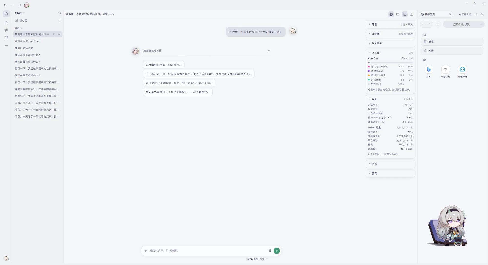

Chat · 桌面陪伴
角色化对话与流式回复，Live2D 流萤常驻桌面。
Windows · Live2D · AI 工作台
Firefly 把一个会陪你聊天的桌面角色，和一个能真正动手干活的 Agent 工作台放在同一个窗口里。每一步做了什么、需要你批准什么，都看得见。

角色化对话与流式回复，Live2D 流萤常驻桌面。
读写文件、整理文档、委派伙伴并行处理。
在绑定的项目里读改代码、跑命令与测试。
真实界面
在线试用
下面运行的是桌面版的同一套界面代码。左上角可以切换 Chat / Work / Code，发一句话看看流萤怎么回应、怎么请你批准。
能做什么
角色化对话与流式回复，Live2D 流萤常驻桌面，有表情和待机动作；可开临时对话，不进历史。
读写文件、整理 Word / Excel / PDF、联网搜索、定时提醒；过程收成一行摘要，结果可展开核对。
在绑定的项目里用 Git、语言服务器、结构化搜索和命令工具读改代码，改动和差异都在右侧。
个人记忆与历史检索存在本机 SQLite；设置里有记忆关系图，可确认、更正或忘记每一条。
Skills 只安装经过审查、锁定提交且内容一致的版本；插件安装时核对 SHA-256，装好后默认停用。
写文件、执行命令、联网操作都走权限等级和审批，可随时取消；角色语气不会放宽这些规则。
常见问题
应用和源码免费（MIT）。对话用的是你自己配置的模型服务，费用由那个服务商收取。
目前是 Windows 10 / 11（x64），这也是主要的开发与验收平台。
内置 OpenRouter 预设，也可以接兼容 Chat Completions 的服务。能否看图取决于模型本身。
没有。本项目是非官方、非商业的同人项目，角色形象与知识产权归 HoYoverse / 米哈游及相应权利人所有。
设置、历史和记忆保存在本机（默认 %APPDATA%\Firefly），记忆数据库的密钥由 Windows DPAPI 保护。对话内容会发给你选择的模型服务。
写文件、执行命令和联网操作按权限等级运行，需要你批准，也可以随时取消。浏览器里的手动授权不会变成 Agent 的授权。
不会。演示页不发任何网络请求，回复是提前写好的，刷新页面就清空。
设置里的 Skills 市场和插件市场可以直接安装。Skills 只装审查过的版本，插件核对 SHA-256，装好后默认停用，由你决定是否开启。
可以。仓库里有插件 SDK（plugin-sdk/）和可运行的示例（examples/），插件只通过公开接口与流萤交互。
可以添加本机命令启动的服务（stdio），或填写远程地址（Streamable HTTP）。
下载 Windows 桌面版，首次启动后填上你自己的模型服务就能开始。